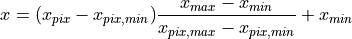
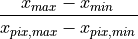
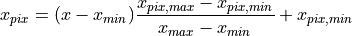
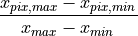

Graphical FrontEnd¶
Main GUI.
Copyright (C) 2020-2021 Milan Skocic.
This program is free software: you can redistribute it and/or modify it under the terms of the GNU General Public License as published by the Free Software Foundation, either version 3 of the License, or (at your option) any later version.
This program is distributed in the hope that it will be useful, but WITHOUT ANY WARRANTY; without even the implied warranty of MERCHANTABILITY or FITNESS FOR A PARTICULAR PURPOSE. See the GNU General Public License for more details.
You should have received a copy of the GNU General Public License along with this program. If not, see <https://www.gnu.org/licenses/>.
Author: Milan Skocic <milan.skocic@gmail.com>
-
class
datadigitizer.gui.AboutWindow(master)[source]¶ About window.
- Parameters
- master: tkinter widget
Container.
-
class
datadigitizer.gui.App(master=None)[source]¶ The cursor is used to point a specific position in the graph whereas all operations are done through keyboard combinations or through the main menu.
Legend:
Red crosses are data points
Blue crosses are Xmin and Xmax
Green crosses are Ymin and Ymax
Commands:
<Ctrl-o> for loading image.
<Ctrl-a> add data point.
<Hold a+Left Click> add data point.
<Left Click> select a data point.
<Hold Ctrl+Left Click> multiple data point selection.
<Ctrl-g> set Xmin from last data point or from selected data point.
<Ctrl-h> set Xmax from last data point or from selected data point.
<Ctrl-j> set Ymin from last data point or from selected data point.
<Ctrl-k> set Ymax from last data point or from selected data point
<Ctrl-l> set all limits from last 4 data points or from last 4 selected data points.
<Ctrl-n> remove all limits.
<Ctrl-z> remove last data point.
<Ctrl-d> remove selected data point.
<Ctrl-D> remove all data points.
<Ctrl-m> compute the data points.
<Ctrl-s> save data points.
<Ctrl-w> clear all.
- Parameters
- master: tkinter.Tk instance
Root instanciation of tkinter.
Methods
run()Start the application.
stop()Stop the main tk loop.
-
class
datadigitizer.gui.FigureFrame(master, **kwargs)[source]¶ Tk frame encapsulating a matplotlib figure and a toolbar.
- Parameters
- kwargs: dict, optional
Keyword arguments for the tk frame.
Methods
refresh()Refresh the plot.
-
class
datadigitizer.gui.HowToUse(master)[source]¶ How to use window.
- Parameters
- master: tkinter widget
Container.
-
class
datadigitizer.gui.ScrolledFrame(master, **kwargs)[source]¶ Scrolled Frame widget which may contain other widgets and can have a 3D border.
- Parameters
- master: tkinter widget
Master container.
- kwargs: dict, optional
Keyword arguments for the scrolled frame.
- Attributes
-
property
canvas¶ Return the canvas that contains the scrollbars.
-
property
frame¶ Return the frame that contains the widgets.
-
class
datadigitizer.gui.Transform(values_min: float, values_max: float, pix_min: Union[int, float], pix_max: Union[int, float], which: str = 'linear')[source]¶ Transform class converting values coordinates into pixel coordinates.
- Parameters
- values_min: int, float
Minimum value.
- values_max: int, float
Maximum value.
- pix_min: int, float
Minimum pixel.
- pix_max: int, float
Maximum pixel.
- which: str, optional
Which kind of transform i.e. linear or log.
- Attributes
backward_scaleReturn the scale for transforming pixels into values.
forward_scaleReturn the scale for transforming values into pixels.
Methods
backward(x)Transform pixels to values.
forward(x)Transform values to pixels.
-
backward(x: Union[int, float, numpy.ndarray])[source]¶ Transform pixels to values.
- Parameters
- x: int or floats or array-like, shape(n,)
Pixels to be transformed.
- Returns
- values: int or floats or array-like, shape(n,)
Values corresponding to the pixels.
Notes

-
property
backward_scale¶ Return the scale for transforming pixels into values.

-
forward(x: Union[int, float, numpy.ndarray])[source]¶ Transform values to pixels.
- Parameters
- x: int or floats or array-like, shape(n,)
Values to be transformed.
- Returns
- pixels: int or floats or array-like, shape(n,)
Values corresponding to the pixels.
Notes

-
property
forward_scale¶ Return the scale for transforming values into pixels.
